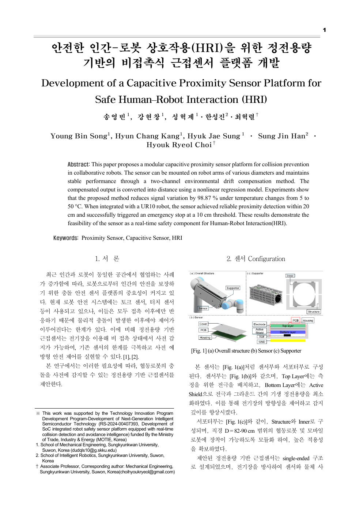
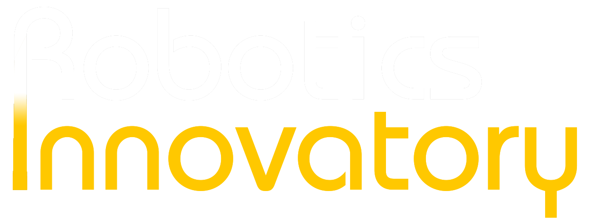
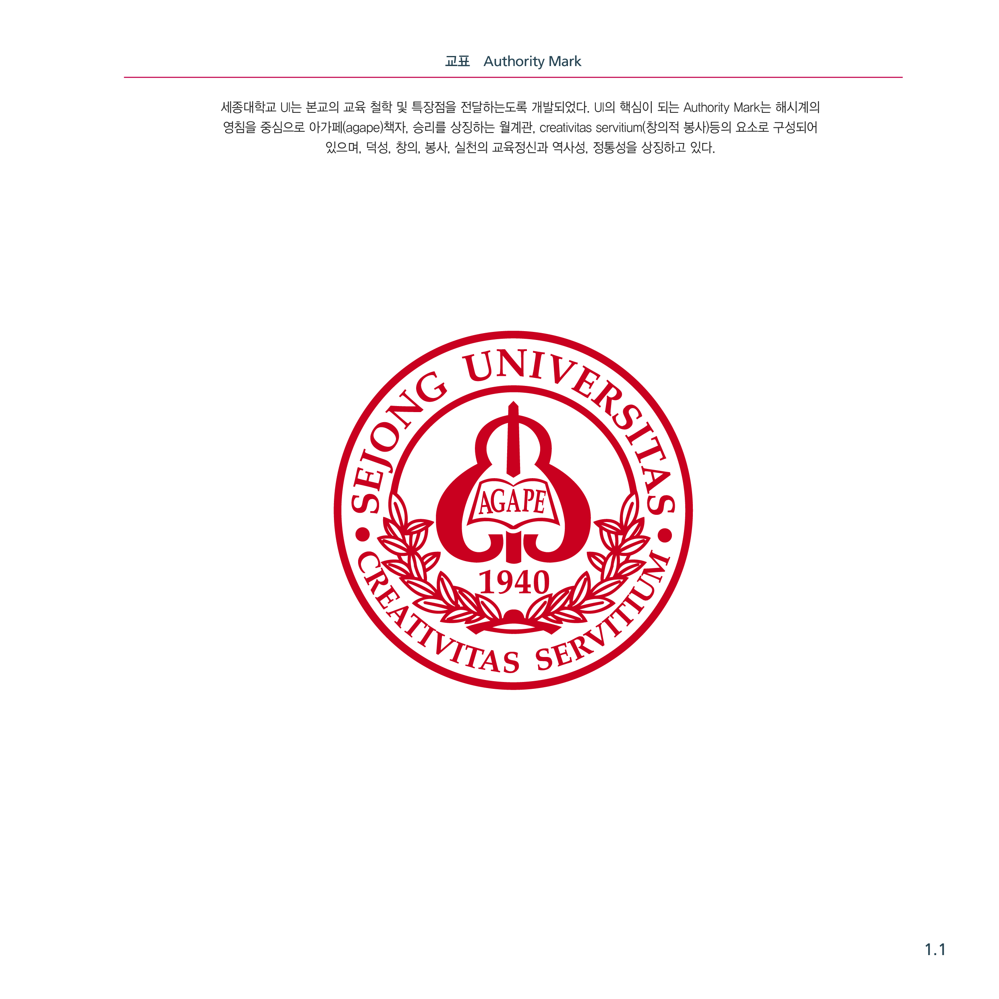

Proximity Sensing
정전용량·ToF 센서를 통합한 로봇 장착형 근접센서 시스템.
프로젝트 보기Proximity Sensing · Reactive Control · Physical AI
M.S. Candidate in Mechanical EngineeringRobotory Lab · Sungkyunkwan University

Published research and engineering recognition

Conference Paper모듈형 정전용량 근접센서와 환경 드리프트 보상 구조를 제안하고, UR10 기반 거리 측정과 비상정지 연동으로 검증했습니다.
부산대학교 총장배 창의비행체 경진대회
세종대학교 공과대학 학술제

Graduate Researcher
Government-Funded R&D Project · Project Contributor

M.S. in Mechanical Engineering
Robotory Lab · Advisor: Prof. Hyuk-Ryeol Choi · GPA 4.0/4.5

B.S. in Mechanical Engineering
GPA 3.93/4.5 · Major GPA 4.05/4.5
센서 회로·PCB 설계와 MCU 기반 데이터 수집·통신 구현
로봇 장착형 센서 모듈과 플랫폼별 교체형 지지부 설계
기구학 기반 제어와 근접 회피, 실시간 로봇 실행 환경 구성
센서 데이터 처리와 학습 모델, Diffusion Policy 기반 로봇 정책 적용
2023—2024 · Hardware · AI · System Prototyping
 01
01
 02
02
 03
03